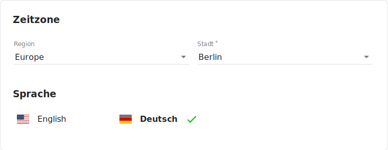
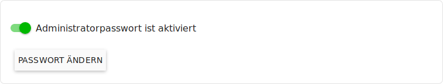
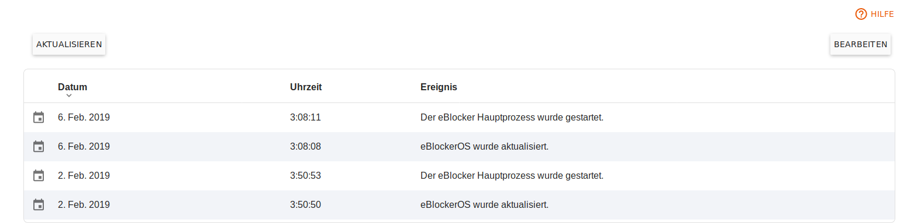

eBlocker Help > Wissensdatenbank > eBlocker Menü
eBlocker Base ✓ / eBlocker Pro ✓ / eBlocker Family ✓
Diese Seite ist weiter unterteilt in die folgenden Abschnitte:
Über diese Seite können Sie die Zeitzone und die Sprache der eBlocker Controlbar und der eBlocker Konsole einstellen. Für die Einstellung der Zeitzone wählen Sie zunächst die Region und dann die Stadt Ihres Landes aus.

Für die Einstellung der Sprache, klicken Sie entweder auf Englisch oder Deutsch. Die gewünschte Sprache wird sofort umgestellt.
Aktivieren Sie hier das Admin Passwort für Ihren eBlocker. Sie können auch das aktuelle Admin-Passwort ändern.

Über diese Seite können Sie den eBlocker neu starten oder herunterfahren.

Um den eBlocker nach dem Herunterfahren erneut zu starten, ziehen Sie die Stromversorgung vom Gerät ab, warten 30 Sekunden und verbinden es anschließend wieder mit der Stromversorgung.
Der eBlocker erkennt Ereignisse wie etwa dass die Netzwerkverbindung getrennt, oder das Netzteil abgezogen wurde, ohne dass der eBlocker heruntergefahren wurde. Solche Ereignisse werden für Sie hier als Information festgehalten.

Sie werden in dem Dashboard darauf hingewiesen, wenn ein neuer Eintrag in der Ereignisliste vorliegt.
Im Fehlerfall können Sie über diese Seite einen automatischen Diagnosebericht erstellen, den Sie an uns an die E-Mail Adresse support@eblocker.com senden können. Dies ermöglicht uns eine schnellere Lösung zu finden. Erstellen Sie den Diagnosebericht ganz einfach mit einem Klick auf den orangen Button Diagnosebericht erstellen und warten Sie einige Sekunden. Anschließend haben Sie die Möglichkeit die Datei herunterzuladen und an unseren Support zu senden. Wir melden uns schnellstmöglich bei Ihnen.

Einstellungen Sichern
Hier haben Sie die Möglichkeit einige Ihrer Einstellungen zu sichern. So können Sie gegebenenfalls vor einem wiederherstellen der eBlocker Werkseinstellungen ein Backup anlegen und dieses nach dem wieder herstellen der Werkseinstellungen wieder einspielen.
Wenn Sie auf den Button Einstellungen sichern klicken, werden folgende Daten in einer Sicherungsdatei gespeichert.
Die Sicherungsdatei wird in Ihrem Downloadverzeichnis gespeichert.
Um eine Sicherungsdatei wiederherzustellen reicht es, wenn Sie auf den Button Einstellungen Wiederherstellen klicken und die Sicherungsdatei aus Ihrem Downloadverzeichnis auswählen.
Aktivierung zurücksetzen
Um die die Aktivierung und Lizenzbindung des Gerätes zurückzusetzen, klicken Sie auf Aktivierung zurücksetzen.
Es erscheint ein neues Fenster, mit der Frage, ob Sie die Lizenz wirklich von dem Gerät entfernen möchten. Möchten Sie die Lizenz entfernen, geben Sie bitte die E-Mail Adresse ein, die Sie bei der Aktivierung des Gerätes verwendet haben. Bitte beachten Sie, dass dieser Vorgang nicht mehr rückgängig gemacht werden kann.
Werkseinstellungen
Hier können Sie den eBlocker auf die Werkseinstellungen zurücksetzen. Beachten Sie bitte, dass alle Einstellungen und die Aktivierung dabei gelöscht werden.
Sie können die Lizenz über den eBlocker Lizenz-Server zurücksetzen und Ihren eBlocker dann neu aktivieren. Gehen Sie dazu bitte auf die Website https://www.eblocker.com/de/lizenztransfer/ und geben Sie dort die Mailadresse ein, mit welcher Sie die eBlocker Lizenz aktiviert haben. Im Anschluss erhalten Sie eine Mail von unserem Lizenz-Server und brauchen nur den Anweisungen dieser Mail folgen.